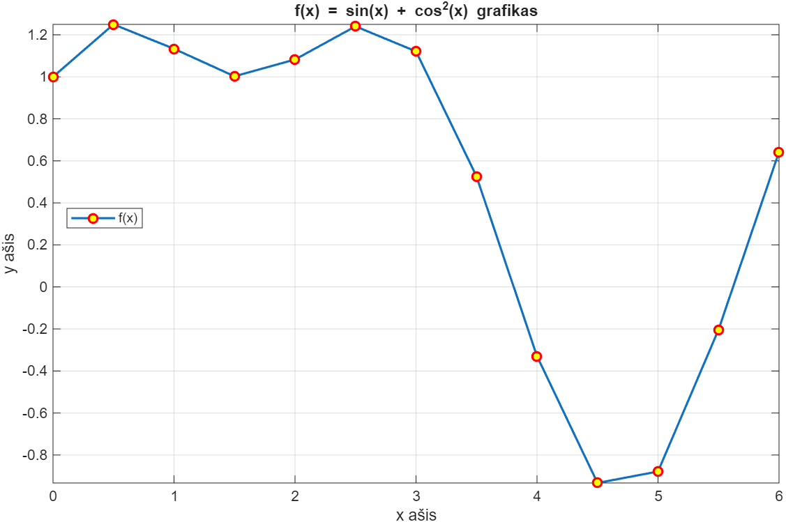
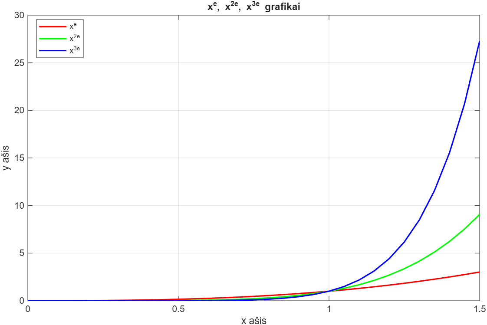
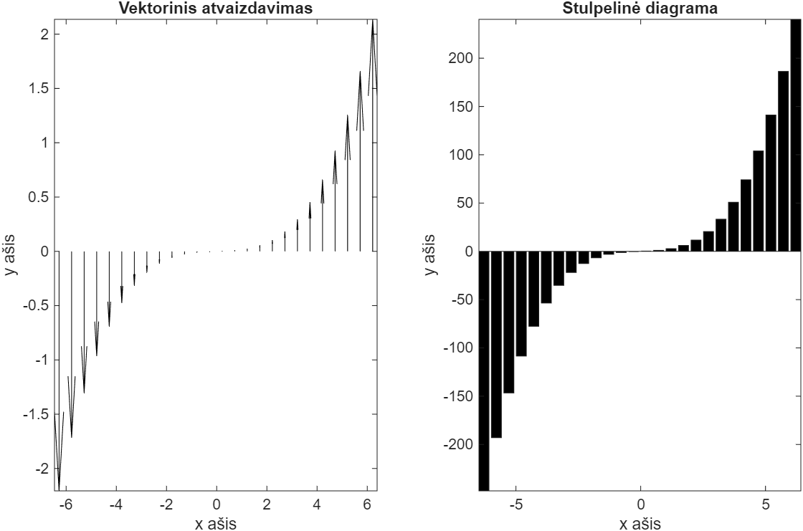
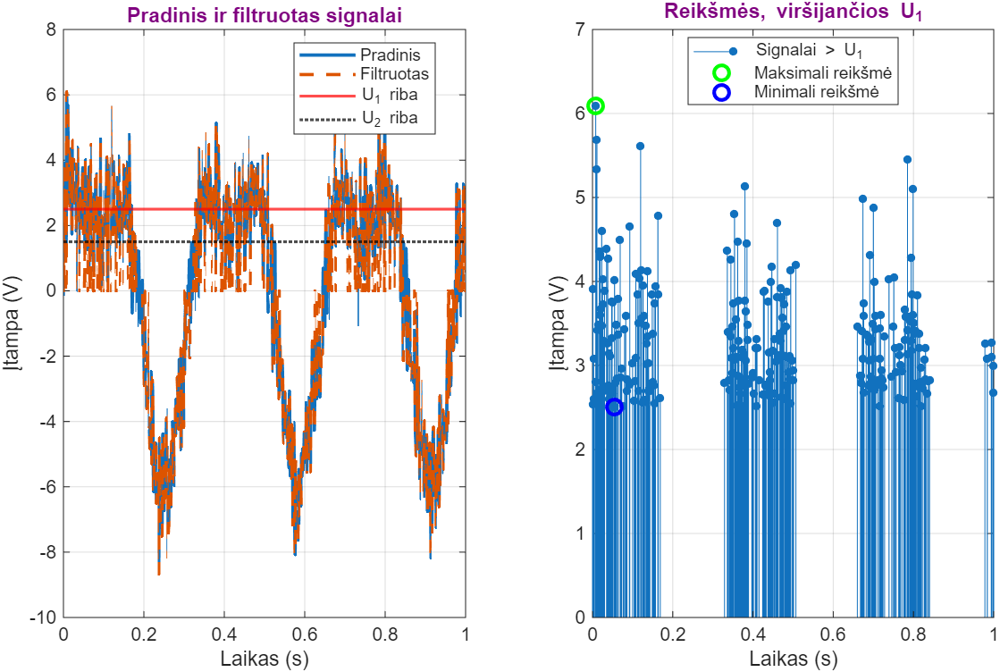
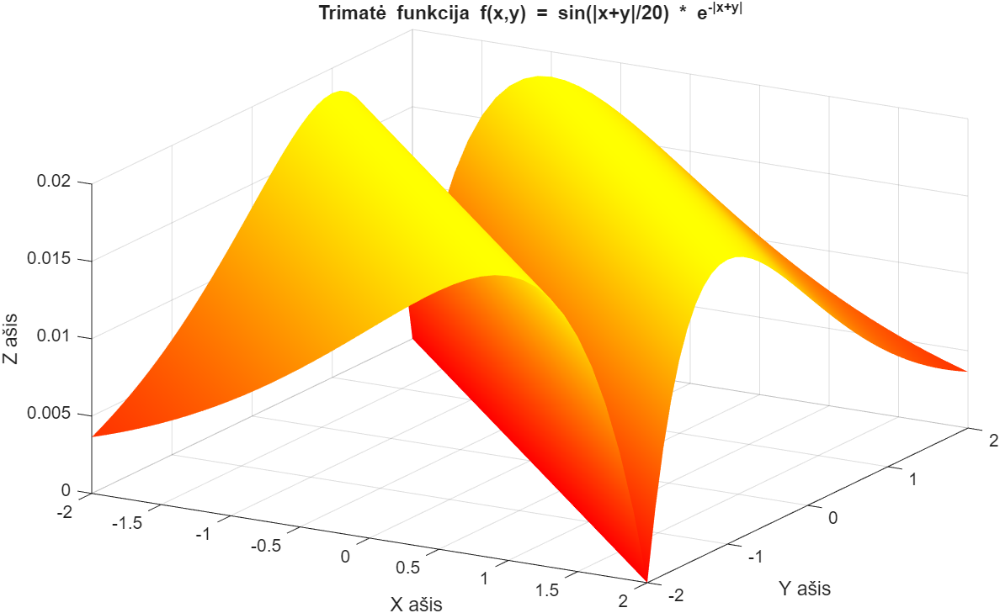
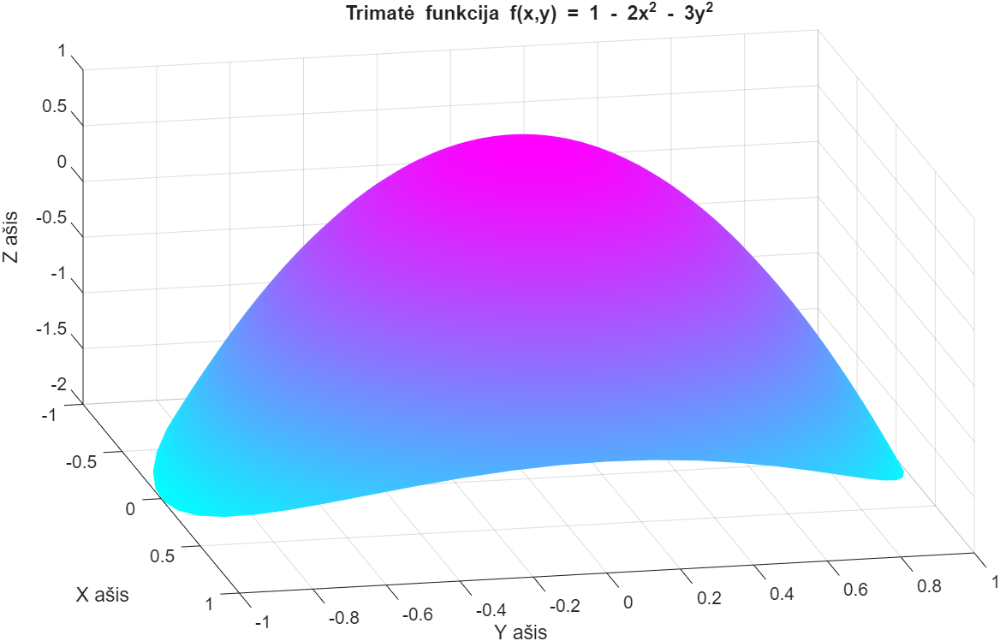
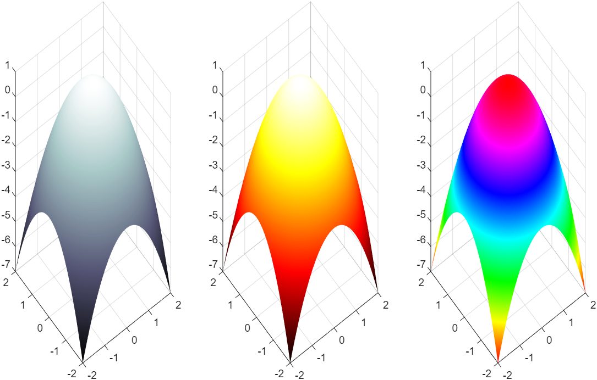

Funkcijos reikšmės apskaičiuotos ir atvaizduotos pasirinktame intervale pažymint skaičiavimo taškus.

Palyginami xe, x2e ir x3e grafikai, parodantys, kaip didesnis laipsnis keičia funkcijų augimą.

Palyginami vektorinis duomenų vaizdavimas ir tų pačių reikšmių stulpelinė diagrama.

Palyginami pradinis ir filtruotas signalai, pažymimos U₁ ir U₂ ribos bei išskiriamos U₁ viršijančios reikšmės.

MATLAB paviršiaus grafike pavaizduota f(x,y) = sin(|x+y|/20) · e−|x+y| funkcija.

Trimatėje erdvėje pavaizduota funkcija f(x,y) = 1 − 2x² − 3y², kurios viršūnė yra ties (0, 0, 1).

Ta pati funkcija z = 1 − x² − y² pateikta trimis spalvų žemėlapiais, palyginant paviršiaus atvaizdavimą.